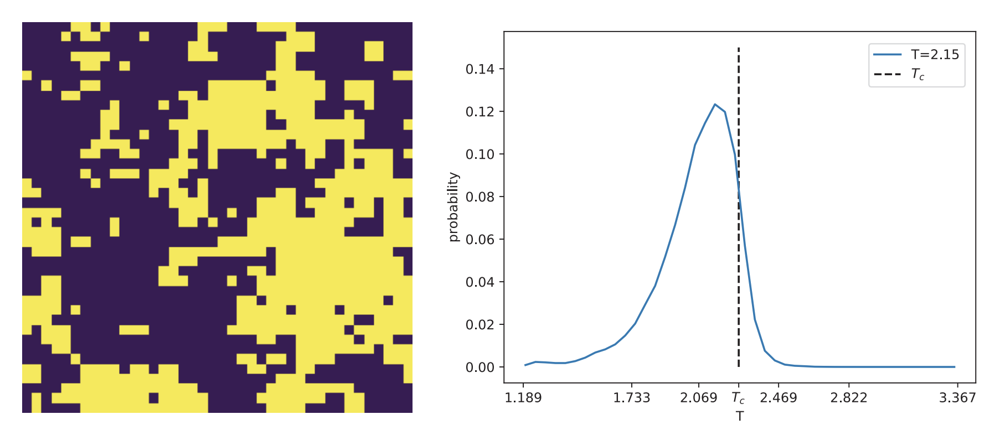
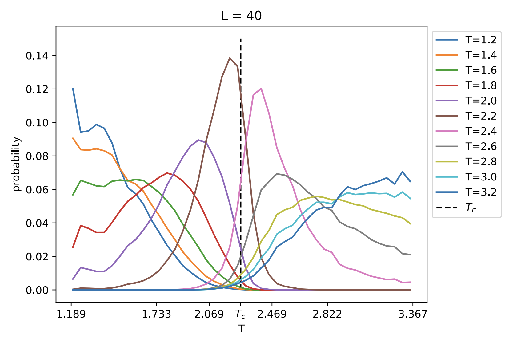

The goal of this project was to get a first impression of Machine Learning in the context of physical processes. The Ising Model was used as a simple example for statistical processes. The report about the project can be viewed here.
Machine Learning
Statistical Physics
Julia Coding
The Ising model is a mathematical model that provides valuable insights into the behavior of magnetic materials and phase transitions.
The Ising model consists of a lattice, which can be thought of as a grid of discrete points or sites. Each site on the lattice is associated with a spin, which can be either up or down. These spins represent the magnetic moments of individual atoms or particles within the material. The behavior of the Ising model is determined by the interactions between neighboring spins.
The energy of the Ising model is defined in terms of these spin interactions. When neighboring spins are aligned, the energy is lower, while misaligned spins result in higher energy. The goal of the Ising model is to determine the equilibrium configuration of spins that minimizes the system's energy.
The Ising model is particularly interesting because it exhibits phase transitions. At low temperatures, the spins tend to align, leading to a ferromagnetic phase with a net magnetization. As the temperature increases, thermal fluctuations become more significant, and the system undergoes a phase transition at a critical temperature (Tc). Above Tc, the material loses its magnetic order, resulting in a paramagnetic phase where spins are randomly oriented.
For temperature = 0, the initial picture has a uniform color (black). As we increase the temperature, more and more pixels change their color until the picture looks like white noise.
Following the paper of Melko et al., I was able to predicted the critical temperature to be Tc = 2.26 ± 0.01. As expected, the predictions improved as the lattice size increased, indicating the significance of system size in achieving higher quality predictions.
By leveraging ensembles of N = 2000 configurations, I employed a novel neural network approach to predict the individual temperature of the coinfigurations. This was done for lattice sizes ranging from 10 to 40.
Above we see the predicted temperature of one individual configuration. The maximum is well alligned with the actual temperature.
As a first approach, the architecture of the neuronal network was not changed and compared to different approaches. The number of hidden layers could have been changed, as well as the number of neurons inside the network. It remains a method of trial and error which kind of structure results in good predictions. In more general problems where there is no system variable like the magnetization, altering the network can lead to dramatic changes in the prediction.
Above we see predictions for different confoguration temperatures. Note that the confidence is highest near the critical temperature. This is because the system ondergoes a sudden phase transition, which leads to rapidly changing configurations.
import numpy as np
import matplotlib.pyplot as plt
# Constants
k_B = 1
T_c = 2 / (k_B * np.log(1 + np.sqrt(2)))
def H_ij(lattice, i, j):
"""
Calculates the energy of a lattice site (i, j) in the Ising model.
Args:
lattice (numpy.ndarray): The Ising lattice.
i (int): Row index of the lattice site.
j (int): Column index of the lattice site.
Returns:
float: The energy of the lattice site (i, j).
"""
down = (i - 1) % lattice.shape[0]
top = (i + 1) % lattice.shape[0]
left = (j - 1) % lattice.shape[1]
right = (j + 1) % lattice.shape[1]
E_ij = np.sign(lattice[i, j]) * (lattice[top, j] + lattice[down, j] + lattice[i, left] + lattice[i, right])
return E_ij
def MonteCarlo_move(T, lattice, i, j):
"""
Performs a Monte Carlo move by attempting to flip the spin of a lattice site (i, j) in the Ising model.
Args:
T (float): Temperature of the system.
lattice (numpy.ndarray): The Ising lattice.
i (int): Row index of the lattice site.
j (int): Column index of the lattice site.
Returns:
numpy.ndarray: The updated Ising lattice.
"""
b = 1 / (T * k_B)
E = H_ij(lattice, i, j) # calculate energy of node
E_flip = H_ij(lattice, i, j) * (-1) # calculate energy of node if flipped
DE = E - E_flip
p = min(1, np.exp(-DE * b)) # take threshold value
r = np.random.rand() # take random value
if r <= p:
lattice[i, j] *= -1 # flip spin if r is smaller than p
return lattice
def MonteCarlo_sweep(T, lattice):
"""
Performs a sweep of Monte Carlo moves on the entire Ising lattice.
Args:
T (float): Temperature of the system.
lattice (numpy.ndarray): The Ising lattice.
Returns:
numpy.ndarray: The updated Ising lattice after the sweep.
"""
lattice_c = np.copy(lattice)
for i in range(lattice_c.shape[0]):
for j in range(lattice_c.shape[1]):
lattice_c = MonteCarlo_move(T, lattice_c, i, j)
return lattice_c
def MonteCarlo(T, lattice, sweeps):
"""
Performs multiple Monte Carlo sweeps on the Ising lattice.
Args:
T (float): Temperature of the system.
lattice (numpy.ndarray): The Ising lattice.
sweeps (int): Number of Monte Carlo sweeps to perform.
Returns:
numpy.ndarray: The final Ising lattice after the specified number of sweeps.
"""
for _ in range(sweeps):
lattice = MonteCarlo_sweep(T, lattice)
return lattice
L = 20
T = 0.1
lattice = np.random.choice([-1, 1], size=(L, L))
lattice = MonteCarlo(T, lattice, 5)
plt.subplot